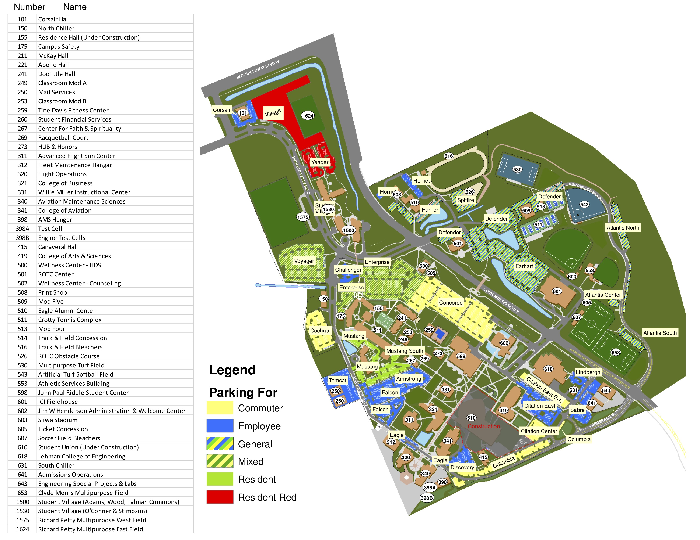

To navagate the webpage, you can select on of the options from the directory above to navagate to the desired parking lot.
The directory lists most all of the commuter parking lots. Once you click on a lot, you can see the parking spots that are available in the given lot. If there are no spaces available, please keep checking back to see if a spot opens up The purpose of this app is to allow commuter students to view parking lots before they decide parking lot to park in. This allows the campus to be less crowded durnng high traffic hours.
The picture on the front of the page gives an overview of all the parking lots available on campus. It also has its own directory that shows the users which lots are available for which commuters. The purpose of this application is focused on the student commuter parking lots on the campus.
the purpose of the picture is mostly to give the user a idea of where the parking lots are located around campus, to help the user make a descision on where would be best to start looking for parking.
If you have any questions or concerns, please contact us at eaglepark@my.erau.edu.
Good luck commuters!